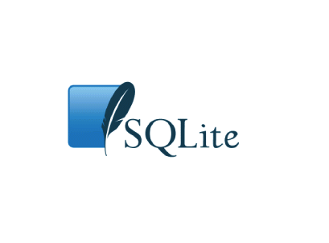

SQLiteAbout SQLiteSQLite is a relational database management system contained in a C programming library. In contrast to other database management systems, SQLite is not a client–server database engine. Rather, it is embedded into the end program. SQLite is ACID-compliant and implements most of the SQL standard, using a dynamically and weakly typed SQL syntax that does not guarantee the domain integrity. SQLite is a popular choice as embedded database software for local/client storage in application software such as web browsers. It is arguably the most widely deployed database engine, as it is used today by several widespread browsers, operating systems, and embedded systems, among others. SQLite has bindings to many programming languages. The source code for SQLite is in the public domain. DesignUnlike client–server database management systems, the SQLite engine has no standalone processes with which the application program communicates. Instead, the SQLite library is linked in and thus becomes an integral part of the application program. (In this, SQLite follows the precedent of Informix SE of c. 1984) The library can also be called dynamically. The application program uses SQLite's functionality through simple function calls, which reduce latency in database access: function calls within a single process are more efficient than inter-process communication. SQLite stores the entire database (definitions, tables, indices, and the data itself) as a single cross-platform file on a host machine. It implements this simple design by locking the entire database file during writing. SQLite read operations can be multitasked, though writes can only be performed sequentially. FeaturesSQLite implements most of the SQL-92 standard for SQL but it lacks some features. For example it partially provides triggers, and it can't write to views (however it provides INSTEAD OF triggers that provide this functionality). While it provides complex queries, it still has limited ALTER TABLE function, as it can't modify or delete columns.  Click on the Image to view the complete SQLite Tutorial |